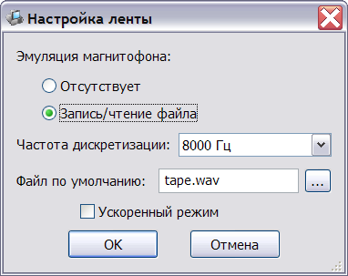
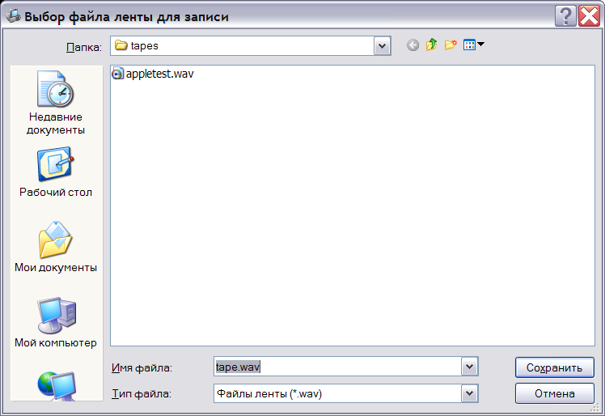

Эмулятор поддерживает чтение/запись данных через магнитофонный интерфейс в звуковые файлы формата WAV.
В окне настройки интерфейса может быть задан режим эмуляции магнитофона и параметры звукового файла: имя по умолчанию (в подкаталоге tapes), частота дискретизации и использование ускоренного режима при обмене с магнитофоном, когда отключаются паузы модуля эмуляции процессора.

Поддерживаются следующие частоты дискретизации выходного сигнала: 8000Гц, 11025Гц, 22050Гц, 44100Гц и 48000Гц. Частота дискретизации входного сигнала выбирается из заголовка файла.
При обращении к интерфейсу магнитофона из программы, открывается окно выбора файла для чтения или записи:

Нажатие кнопки "Отмена" в окне выбора файла ленты временно отключает интерфейс магнитофона, до следующего сеанса записи.
См. также: Изменение конфигурации, Описание и настройка устройств, Поддерживаемое оборудование, Главное меню